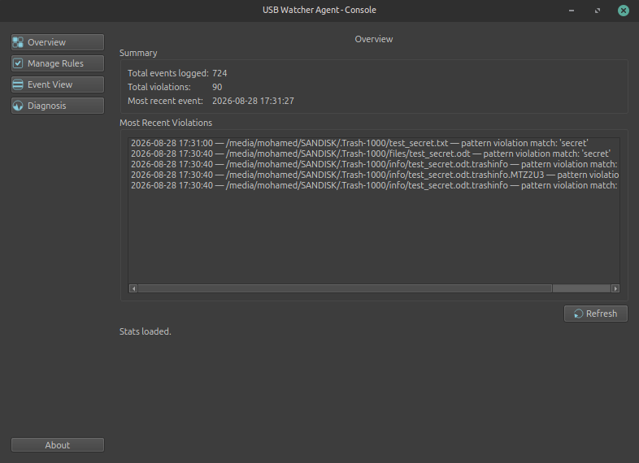
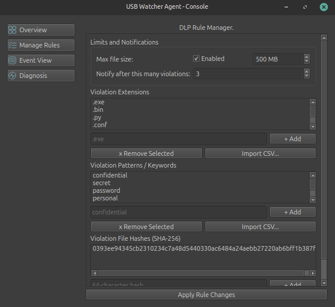
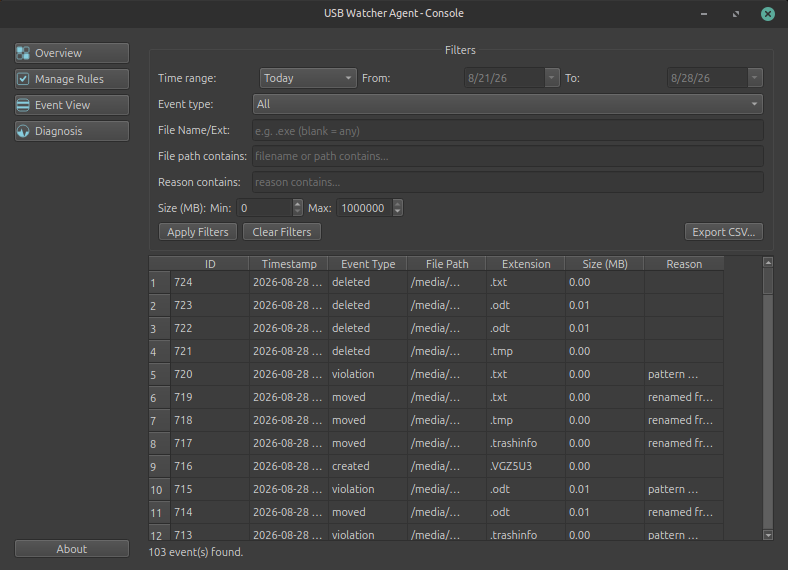
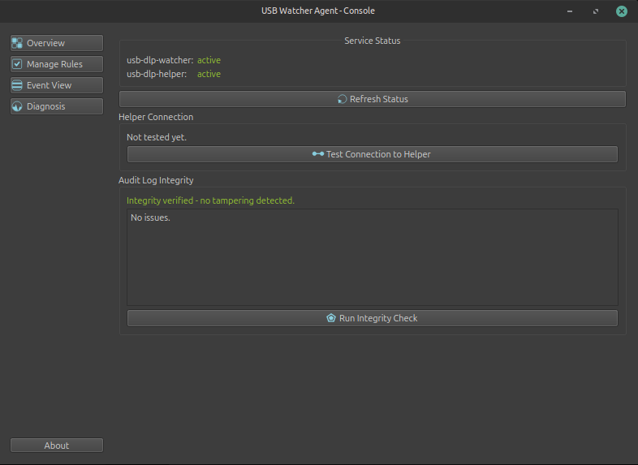

The USB Watcher Agent
Our DLP software for USB.




Overview
USB DLP Watcher is a real-time data loss prevention tool for Linux that monitors file transfers written to external USB storage. It detects policy violations as they happen, keeps a tamper-evident audit trail of every transfer, and gives administrators a dedicated console to manage rules and review activity.
Key Features
- Real-Time Monitoring: USB activity is detected and evaluated the instant it happens — no delay, no polling.
- Boot-Independent Coverage: Protection is active from system startup, independent of whether a user is logged in.
- Configurable DLP Rules: Flag transfers by file type, filename pattern, size, known file signatures, and in-document keyword content.
- Tamper-Evident Audit Log: Every event is recorded with cryptographic integrity protection, so tampering with the historical record is detectable.
- Hardened by Design: Administrative changes require fresh authentication every time — no standing privilege, no stored credentials, no exploitable shortcuts.
- Dedicated Management Console: A native Linux desktop application for system overview, rule management, filterable event history, and live diagnostics.
Note
In this Free-tier version, file transfers that violate DLP rules are not blocked, only marked as violations.